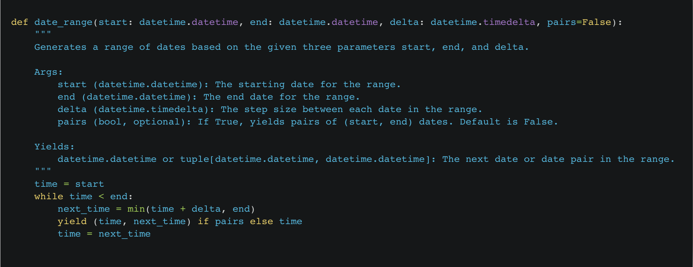
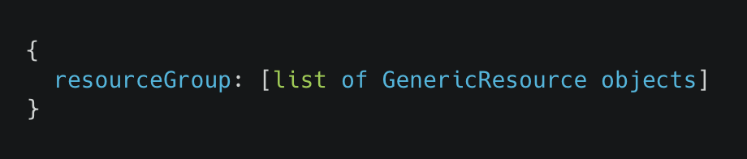
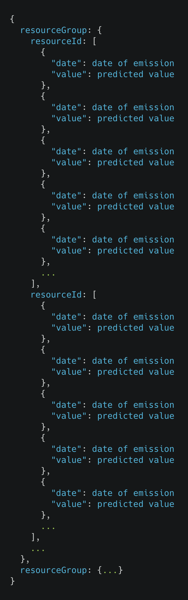

Table of Content
- System architecture diagram
- Site Map
- Sequence Diagrams
- Design Patterns
- Class Diagrams
- Data storage
- APIs defined
System architecture diagram
We use a request response architecture. The front end makes HTTP responses to a RESTful API; it renders the responses data as charts, graphs and text using the Nivo graphing library.
Site Map
After conducting interviews, we made two persona pages respectively for each of the interviewees. This helps us better understand their needs and goals and identify their requirements. Also, we wrote a short story for each of their use cases.
Sequence Diagrams
After conducting interviews, we made two persona pages respectively for each of the interviewees. This helps us better understand their needs and goals and identify their requirements. Also, we wrote a short story for each of their use cases.
View Past Carbon Emissions

View Predicted Carbon Emissions and Advice

Design Patterns
- Singleton Pattern - All of the external API and SDK clients (namely ElectricityMapperClient, AzureClient and OpenAIClient) are implemented as singletons. This is done so they share caches despite being instantiated in different modules. This has a significant performance benefit as different API endpoints instantiate the clients at different points. The singleton pattern allows the speeds gain of caching to be realised no matter the order in which the API endpoints are queried. This design pattern restricts the instantiation of a class to a single instance and ensures that no other instance of that class can be created.
-
Adapter Pattern - The get_advice method of the OpenAIClient class can't accept a list of GenericResource objects directly as it is lacking some data about each resource. The GenericResource class is owned by Microsoft’s Azure SDK and can therefore not be edited. To fix this the adapter design pattern is used. We designed the ResourceEmissionsInfo class as a wrapper around the GenericResource class to allow the advice to be generated.
The main goal of the Adapter pattern is to make classes with incompatible interfaces work together seamlessly. The pattern consists of three main components:
- Target (OpenAIClient)
- Adaptee (GenericResource)
- Adapter (ResourceEmissionsInfo)
-
Iterator Pattern - A function is needed that generates a list of pairs dates from a start to end time in given increments. It should not exceed the end time: for example if your give it 01/01/2023 00:00 to 03/01/2023 12:00 with a 24 hour increment, it should return (01/01/2023 00:00, 02/01/2023 00:00), (02/01/2023 00:00, 03/01/2023 00:00) and no further. An iterator pattern can be used here to hide the implementation and do it infinitely if no end date is specific as seen below:

Class Diagrams
Data storage
Our solution has no persistent data storage and no databases but does make use of various caches. These caches are updated first before the server serves it first request and are then updated every hour by a background process thereby making the backend multithreaded.
-
Resource Cache. Querying the Azure SDK is a slow operation. Therefore, a cache of all resource groups and their resources will be maintained. It will have the following structure:
Resources should only ever be attempted to be accessed through the AzureClient Singleton. Therefore, the AzureClient will maintain this cache. It will invalidate the cache every hour and repopulate.
-
Predictions Cache. Generating the future carbon emissions through our ML model is a slow operation. Therefore, a cache of all resources and their future predictions will be maintained. The UI will only ever display the next 3 days predicted emissions in one-hour intervals. Therefore, the cache will have the following structure:

APIs defined
This is a Swagger specification of the REST API implemented: